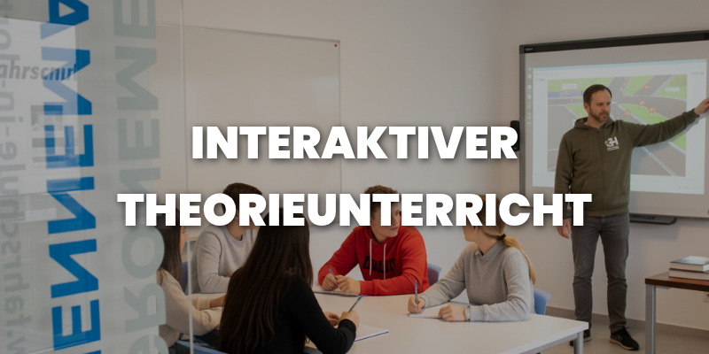

Führerschein in Rekordzeit in Dortmund? Warum unsere Erfahrung deine beste Abkürzung ist.
Veröffentlicht am 01. September 2025 | Lesezeit: ca. 12 Minuten
Die Ferien stehen vor der Tür, ein neuer Job beginnt – und der Führerschein muss schnell her. Der Gedanke an einen Intensivkurs klingt verlockend, doch oft schwingt die Sorge mit: Leidet die Qualität? Endet das Ganze in Stress und Chaos? Viele "Crashkurse" versprechen viel, doch am Ende steht man oft mit mehr Fragen als Antworten da. Wir sagen: Es geht auch anders. Schnell, aber ohne Hetze. Effizient, aber ohne Kompromisse bei der Sicherheit.
Jeder Tag ohne Führerschein fühlt sich wie eine verpasste Chance an – der spontane Ausflug mit Freunden, die bessere Jobmöglichkeit am anderen Ende der Stadt, die einfache Unabhängigkeit, jederzeit losfahren zu können. Diese aufgeschobene Freiheit ist frustrierend. Ein Intensivkurs ist daher mehr als nur eine Ausbildung; er ist ein Versprechen, diese Lücke schnell und planbar zu schließen und dir die Kontrolle über deine Mobilität und deine Zeit zurückzugeben.
Der Mythos vom "Crashkurs": Warum schnell nicht unseriös bedeuten darf
Der Begriff "Crashkurs" hat oft einen negativen Beigeschmack. Er suggeriert, dass Wissen im Eiltempo eingetrichtert wird, ohne wirklich zu haften. Das ist genau das Gegenteil von dem, was wir tun. Unsere Intensivkurse sind das Ergebnis jahrzehntelanger Optimierung. Wir haben einen Prozess geschaffen, der es ermöglicht, Lerninhalte effizient und nachhaltig zu vermitteln, sodass du nicht nur die Prüfung bestehst, sondern dich auch langfristig sicher am Steuer fühlst.
Der entscheidende Unterschied liegt im Ziel: Viele Schnellkurse zielen nur auf das kurzfristige Bestehen der Prüfung ab. Wissen wird auswendig gelernt, aber nicht verinnerlicht. Wir gehen einen anderen Weg. Unser Ziel ist es, dir von der ersten Minute an echte Fahrkompetenz zu vermitteln. Denn die wahre Abkürzung ist nicht, Inhalte wegzulassen, sondern sie so intelligent zu vermitteln, dass sie sofort sitzen und du im echten Verkehr souverän agieren kannst.
Unser Rezept für Geschwindigkeit: 65 Jahre Erfahrung + ein unschlagbares System
Unsere Geschwindigkeit ist kein Zufallsprodukt, sondern das Resultat einer perfekten Symbiose aus Tradition und Innovation. Wir wissen genau, an welchen Stellschrauben wir drehen müssen, um deine Ausbildung zu beschleunigen, ohne die Qualität zu opfern. Das Herzstück dieses Ansatzes ist unser klar definierter 5-Meilenstein-Prozess.
Unsere 65-jährige Erfahrung ist dabei mehr als nur eine Zahl auf dem Papier. Es ist ein riesiger Wissensschatz darüber, wie Menschen am besten lernen, welche Fehler typischerweise gemacht werden und wie man sie von vornherein vermeidet. Jeder einzelne dieser Erfahrungswerte ist in unser System eingeflossen. Wir haben die typischen "Zeitfresser" einer Fahrausbildung identifiziert und durch smarte Prozesse ersetzt. Das ist der Grund, warum wir schneller sind: nicht weil wir hetzen, sondern weil wir den Weg kennen.
Diese visuelle Roadmap ist mehr als nur eine Grafik – sie ist unser Versprechen an dich. Sie zeigt auf einen Blick, dass deine Ausbildung kein unübersichtliches Unterfangen ist, sondern ein klar definierter Weg mit einem festen Ziel. Jeder Meilenstein ist ein erreichbarer Schritt, der dich systematisch und ohne Umwege zu deinem Führerschein führt. Lass uns nun eintauchen, wie die ersten, entscheidenden Meilensteine dieses Fundament für deinen schnellen Erfolg legen.
Meilenstein 1 & 2: Perfekte Vorbereitung im 7-Tage-Theorie-Block
Alles beginnt im Kopf. Unser einzigartiger 7-Tage-Theorie-Block legt die entscheidende Grundlage. In einer festen Lerngruppe erarbeitest du dir das gesamte Theoriewissen praxisorientiert. Du lernst nicht nur für die Prüfung, sondern verstehst die Zusammenhänge für die Praxis. Das spart dir später wertvolle und teure Zeit im Auto.
Der Vorteil einer festen Gruppe ist dabei nicht zu unterschätzen. Gemeinsam mit anderen, die das gleiche Ziel haben, entsteht eine motivierende Dynamik. Man tauscht sich aus, hilft sich gegenseitig und feiert zusammen Erfolge. Dieser soziale Aspekt macht das Lernen nicht nur angenehmer, sondern auch deutlich effektiver.
Praxisorientiert bedeutet bei uns: Wir pauken keine Paragrafen, wir bereiten dich auf die Straßen Dortmunds vor. Wir simulieren im Unterricht typische Verkehrssituationen, die dich hier vor Ort erwarten, von der kniffligen Kreuzung in Hombruch bis zum dichten Verkehr auf dem Wallring. So schaffst du eine direkte Verbindung zwischen Theorie und Praxis, lange bevor du das erste Mal auf der Kupplung stehst.
Meilenstein 3 & 4: Geplante Praxis und gezielte Prüfungsvorbereitung
Das größte Hindernis auf dem Weg zum schnellen Führerschein ist schlechte Planung. Bei uns gibt es kein "mal sehen, wann wir die nächste Stunde finden". Wir planen deine Fahrten systematisch und verlässlich, abgestimmt auf deinen Theorie-Fortschritt. Über unsere DriveBuzzApp hast du jederzeit die volle Kontrolle und Transparenz über deinen Ausbildungsplan. Dieses Anti-Chaos-Versprechen ist der Kern unseres bewährten 5-Meilenstein-Plans.
Doch der beste Plan ist nur so gut wie der Mensch, der ihn umsetzt. Dein Fahrlehrer ist hier mehr als nur ein Lehrer – er ist dein Coach. Er kennt den Plan, aber er kennt vor allem dich. Er weiß, wann er dich fordern muss und wann du eine Bestätigung brauchst. Diese persönliche Betreuung stellt sicher, dass der strukturierte Prozess nicht zu einem starren Korsett wird, sondern sich flexibel an deinen individuellen Lernfortschritt anpasst.
Diese Planbarkeit wird durch unsere Technik-Vorteile unterstützt. Am Fahrsimulator übst du Grundfertigkeiten und komplexe Situationen in einer stressfreien Umgebung. Du übst das Anfahren am Berg dutzende Male, bis es perfekt sitzt – ganz ohne den Druck des nachfolgenden Verkehrs. Unsere leisen und leicht zu bedienenden E-Autos tun ihr Übriges, damit du dich von der ersten Minute an voll und ganz auf den Verkehr konzentrieren kannst, statt mit der Gangschaltung zu kämpfen.
Die im Simulator gewonnene Routine ist die halbe Miete. Doch die wahre Magie entsteht in der Übertragung dieses Könnens auf die echte Straße. Hier kommt die unersetzliche Erfahrung unserer Fahrlehrer ins Spiel. Sie fungieren als Brücke zwischen der virtuellen und der realen Welt, helfen dir, das Gelernte im dynamischen Dortmunder Stadtverkehr anzuwenden und geben dir das Feingefühl, das keine Maschine lehren kann. So wird aus technischer Vorbereitung echte Fahrkompetenz.
Meilenstein 5: Die Prüfung als Heimspiel
Der letzte Schritt ist die Prüfung – und auch hier überlassen wir nichts dem Zufall. Durch die gezielte Vorbereitung in deinem Prüfgebiet kennst du jede Ecke. Die Prüfung fühlt sich nicht wie ein Sprung ins kalte Wasser an, sondern wie eine weitere, routinierte Fahrstunde. Das ist unser "Heimvorteil", der den entscheidenden Unterschied für deinen Erfolg und dein Nervenkostüm macht.
"Ich hatte Bedenken wegen des Tempos, aber durch die super Struktur war es total machbar. Prüfung beim ersten Mal bestanden!"
Für wen ist unser Intensivkurs die perfekte Abkürzung?
Ein Intensivkurs ist eine fantastische Möglichkeit, aber er passt nicht zu jedem Lebensstil. Wir haben festgestellt, dass vor allem drei Gruppen von unserem Turbo-Modell profitieren:
Der Effiziente Lerner & Berufseinsteiger
Du startest bald ins Studium oder in den neuen Job und der Führerschein fehlt noch auf der To-Do-Liste? Du magst es, Dinge strukturiert und ohne Leerlauf anzugehen? Dann ist unser planbarer Prozess genau das Richtige für dich. Du kannst die Ausbildung perfekt in einer freien Phase unterbringen und das Thema abhaken, bevor der neue Lebensabschnitt beginnt.
Der menschliche Geist lernt am besten, wenn er sich voll auf eine Sache konzentrieren kann. Anstatt Wissen über Wochen zu verteilen und immer wieder neu "hochfahren" zu müssen, bleibst du im Intensivkurs mental voll im Thema. Dieser Fokus führt zu einer steileren Lernkurve und einem tieferen Verständnis, was den gesamten Prozess nicht nur beschleunigt, sondern auch nachhaltiger macht.
Der Ferien-Nutzer (Schüler & Studenten)
Die langen Sommer- oder Semesterferien sind die ideale Zeit, um den Führerschein zu machen. Statt die Ausbildung über Monate neben der Schule oder Uni zu strecken, nutzt du die freie Zeit optimal. So bleibst du am Ball, vergisst Gelerntes nicht und kannst dich voll und ganz auf eine Sache konzentrieren. Das Ergebnis: schnellerer Erfolg und mehr freie Zeit im Anschluss.
Der "Jetzt-oder-Nie"-Entschlossene
Du hast den Führerschein schon lange vor dir hergeschoben und möchtest jetzt endlich durchstarten? Unser Intensivkurs gibt dir den nötigen Rahmen und die Verbindlichkeit, die du brauchst. Der feste Zeitplan und die klaren Meilensteine helfen dir, deine Motivation hochzuhalten und das Ziel fest im Blick zu behalten.
Nicht nur schnell, sondern auch smart: Wie du zusätzlich profitierst
Ein Intensivkurs bei uns ist mehr als nur eine schnelle Ausbildung. Es ist eine smarte Investition in deine Zukunft und dein Portemonnaie.
Diese Anzeige visualisiert den wichtigsten Wandel, den du bei uns durchläufst: den von anfänglicher Unsicherheit hin zu echter Souveränität am Steuer. Dieses Gefühl bedeutet mehr, als nur die Regeln zu kennen. Es ist die Fähigkeit, vorauszudenken, komplexe Situationen intuitiv richtig einzuschätzen und das Fahrzeug als selbstverständliches Werkzeug zu beherrschen. Es ist die innere Ruhe, die dich zu einem wirklich sicheren Fahrer für den Rest deines Lebens macht.
Der wahre Gewinn: Souveränität von Tag eins
Die größte Ersparnis lässt sich nicht in Euro messen: Es ist das Gefühl von Sicherheit und Selbstvertrauen, das du aus unserer Ausbildung mitnimmst. Du lernst nicht nur, ein Auto zu bedienen, sondern den Verkehr zu verstehen und vorausschauend zu handeln. Diese Souveränität, die dir unser großes und erfahrenes Team vermittelt, ist die beste Versicherung für deine Zukunft auf der Straße.
Letztendlich ist der schnelle Erfolg bei der Prüfung nur der Anfang. Unser eigentliches Ziel ist es, dich zu einem Fahrer zu machen, der auch Jahre später noch sicher und vorausschauend unterwegs ist. Die im Intensivkurs erlernte Routine und das tiefe Verständnis für Verkehrsabläufe bilden das Fundament für ein ganzes Leben sicherer Mobilität. Das ist nicht nur für dich, sondern auch für deine Eltern das beruhigendste Gefühl von allen.
Unser Versprechen: Theorie bestanden, Gebühr geschenkt
Wir sind von der Qualität unserer Theorieausbildung so überzeugt, dass wir dir die Prüfungsgebühr schenken, wenn du im ersten Anlauf bestehst. Ein Anreiz, der sich für dich direkt auszahlt und unser Vertrauen in unser System unterstreicht.
Der "Heimvorteil": Deine Prüfung in vertrauter Umgebung
Prüfungsstress? Nicht bei uns. Du legst deine Prüfung in dem Gebiet ab, in dem du auch geübt hast. Du fährst genau die kniffligen Kreuzungen in Dortmund-Lütgendortmund ab, die auch der Prüfer liebt. Keine Überraschungen, nur Routine. Dieser Heimvorteil gibt dir die nötige Gelassenheit, um im entscheidenden Moment dein ganzes Können zu zeigen.
Passt der Intensivkurs zu dir? Finde es heraus!
Beantworte 3 kurze Fragen und erhalte eine persönliche Empfehlung.
1. Wie schnell möchtest du deinen Führerschein in den Händen halten?
2. Wie viel Zeit kannst du am Stück für die Ausbildung investieren?
3. Wie lernst du am besten neue, komplexe Dinge?
Deine Empfehlung:
Bitte beantworte alle Fragen.
Egal, welches Ergebnis dir unser kleiner Test empfohlen hat – es zeigt, dass die Wahl des richtigen Ausbildungsweges eine sehr persönliche Entscheidung ist. Vielleicht hast du jetzt eine klarere Vorstellung, aber auch noch die eine oder andere offene Frage. Das ist völlig normal. Genau aus diesem Grund haben wir die häufigsten Fragen unserer Fahrschüler gesammelt und beantwortet, um dir bei deiner Entscheidung die letzte Sicherheit zu geben.
Häufig gestellte Fragen (FAQ) zum Intensivkurs
Ist ein Führerschein in 7 oder 14 Tagen wirklich realistisch?
Ja, absolut. Voraussetzung ist dein volles Engagement und unsere perfekte Planung. Der 7-Tage-Kurs bezieht sich auf die Theorie, die praktische Ausbildung planen wir individuell und so kompakt wie möglich daran anschließend.
Was passiert, wenn ich die Prüfung nicht bestehe?
Das ist kein Weltuntergang. Gemeinsam analysieren wir, woran es lag, und planen die nächsten Schritte. Dank unserer guten Vorbereitung und dem "Heimvorteil" ist die Durchfallquote aber extrem gering.
Wie viel kostet ein Intensivkurs bei euch?
Da die Anzahl der benötigten Fahrstunden individuell ist, erstellen wir dir ein transparentes, persönliches Angebot. Klar ist: Durch unser System sparst du am Ende oft Geld im Vergleich zu einer langwierigen Ausbildung. Mehr dazu erfährst du hier: wie du damit bares Geld sparst.
Muss ich für einen Intensivkurs Urlaub nehmen?
Für den 7-Tage-Theorieblock ist eine durchgehende Anwesenheit essenziell. Die meisten unserer Teilnehmer nutzen dafür eine Urlaubswoche oder die Ferien. Die anschließenden Fahrstunden können wir flexibler planen, aber für den maximalen Erfolg empfehlen wir, sich für die gesamte Dauer der Ausbildung einen freien Zeitblock zu schaffen.
Brauche ich Vorkenntnisse für den Intensivkurs?
Nein, du fängst bei Null an. Alles was du brauchst, ist Motivation und die Bereitschaft, dich auf unseren bewährten Prozess einzulassen.
Bereit für den Turbo-Start?
Der schnellste Weg beginnt mit dem ersten Schritt. Lass uns gemeinsam herausfinden, wie dein persönlicher Plan zum Führerschein in Rekordzeit aussehen kann.
Jetzt unverbindlich beraten lassenWas ist dein Hauptgrund, den Führerschein schnell machen zu wollen? Schreib es uns in die Kommentare!